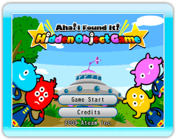
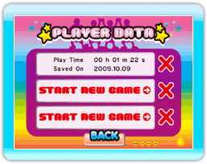

10 |
Das Spiel starten |
 |

Richte den Cursor auf eines der unten befindlichen Felder und wähle es mit dem A-Knopf aus.
PLAYER DATA Menü  Wenn du zum ersten Mal spielst, wähle 'START NEW GAME'. Es wird eine Einführung zum Spiel gezeigt. Wenn es bereits Spielstände gibt, kannst du die gespeicherten Spiele durch dortiges Drücken des A-Knopfes fortsetzen. Um Spielstände zu löschen, drücke das rote 'X' rechts. * Dein Spielstand wird automatisch gespeichert, wenn du eine Stufe gelöst hast. Einführung Wenn du zum ersten Mal spielst, erscheint eine Einführung zu den Spielfiguren und den Einstellmöglichkeiten im Spiel. Danach richte den Cursor auf eines der Felder und wähle es mit dem A-Knopf aus.  1: Monitor
1: MonitorZum Menü "Stufe wählen" 2: UFO Ein-/Ausgang Zurück |
 |
 |
 |